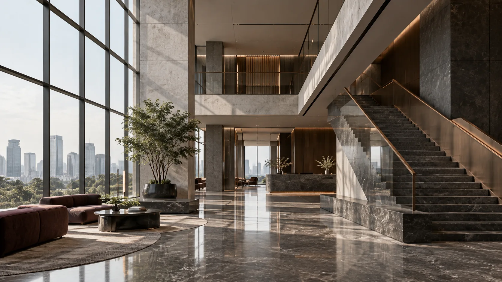

Tentang FirmaAbout the Firm
Nasihat hukum yang bergerak seirama dengan bisnis.Counsel that moves at the pace of business.
Firma korporasi dan komersial berbasis di Jakarta, dibangun untuk menangani keputusan bernilai tinggi dengan pendekatan yang jernih, kolaboratif, dan disiplin.A Jakarta-based corporate and commercial law firm built to support high-value decisions with clarity, collaboration, and discipline.
Cara Kami BerpikirHow We Think
Kompleksitas perlu diurai, bukan diperbesar.Complexity should be clarified, not amplified.
Arkana Pradipta & Partners hadir dengan satu keyakinan sederhana: persoalan hukum bisnis seharusnya dijelaskan secara lugas tanpa kehilangan kedalaman. Kami menggabungkan analisis yang teliti dengan pemahaman terhadap cara perusahaan beroperasi, berinvestasi, dan bertumbuh.Arkana Pradipta & Partners is founded on a simple belief: business law should be explained clearly without sacrificing depth. We combine rigorous analysis with an understanding of how companies operate, invest, and grow.
Dari tujuan bisnis hingga eksekusi.From business objective to execution.
Setiap mandat dimulai dengan memahami keputusan yang perlu dibuat, bukan sekadar dokumen yang perlu diselesaikan.Every mandate begins with understanding the decision to be made, not merely the document to be completed.
Prinsip yang menjaga kualitas setiap nasihat.Principles that shape the quality of every advice.
Nilai kami diterjemahkan ke dalam cara menganalisis, berkomunikasi, dan bertanggung jawab atas pekerjaan.Our values are reflected in how we analyse, communicate, and take responsibility for our work.
Perspektif lintas batas, koordinasi yang tetap dekat.Cross-border perspective, closely coordinated.
Untuk perkara lintas yurisdiksi, kami dapat berkoordinasi dengan penasihat independen di negara terkait sesuai kebutuhan setiap mandat.For cross-border matters, we can coordinate with independent counsel in relevant jurisdictions according to the needs of each mandate.
Keputusan penting membutuhkan dasar yang kuat.Important decisions deserve a sound foundation.
Ceritakan konteks bisnis Anda. Kami akan membantu memetakan pertanyaan hukum yang perlu dijawab.Share your business context. We will help identify the legal questions that need to be addressed.
Mulai PercakapanStart a Conversation